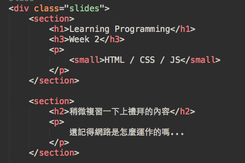
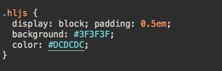
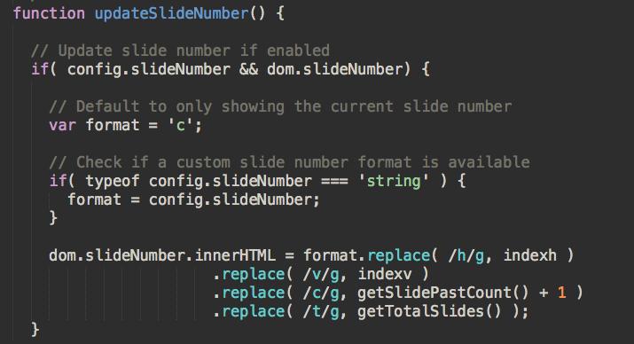

Learning Programming
Week 2
HTML / CSS / JS
稍微複習一下上禮拜的內容
還記得網路是怎麼運作的嗎...
先簡單地瞄過一下..
HTML..
CSS..
JS..
就是寫一些 .html, .css, .js 檔啊，不然要幹麻
等等，什麼是副檔名
(Filename Extension)？
例如：example.txt
txt 就是副檔名，早期用來標示檔案類型
但這造成許多安全缺陷
例如：修改副檔名，或甚至在作業系統隱藏副檔名的狀況下，把 example.txt.exe 偽裝成 example.txt
副檔名最大作用
讓系統決定用什麼程式打開
前端的專業分工
- HTML 在畫面上放上按鈕
- CSS 決定按鈕長什麼樣子
- JS 控制按按鈕後的行為
HTML
文件類型 (doctype)
請一律使用
<!DOCTYPE html>不要使用那些跟這個長很像的
<!DOCTYPE HTML PUBLIC "-//W3C//DTD HTML 4.01 Transitional//EN"
"http://www.w3.org/TR/html4/loose.dtd">標籤 (tag)
長這樣的就是標籤
<xxx></xxx>有的需要關起來 (close)
<xxx></xxx>有的則不用
<xxx>屬性 (attribute)
標籤上面有些標示，就是屬性
<input type="button" name="abutton">例如上面的 type 跟 name
標籤萬萬種
比較會用到的是這些
<html>, <body>, <head>, <title>, <link>, <script>, <style>, <a>, <br>, <button>, <canvas>, <div>, <h1> ~ <h6>, <ul>, <ol>, <li>, <img>, <input>, <p>, <span>, <textarea>, <iframe>
標準結構是這樣
<!DOCTYPE html>
<html lang="en">
<head>
<meta charset="UTF-8">
<title>Document</title>
</head>
<body>
</body>
</html>
- 一定要有 doctype
- 一定要有 html tag
- html tag 裡面一定要有 head, body
- head 是一些額外的資訊
- body 是放主要內容
常有些什麼資訊？
<title>初學者先會這個就過得去了</title>a (anchor)
<a href="//www.google.com" target="_blank">這是個超連結</a>
<a href="/week-1">連到 week-1</a>
img (image)
<img src="img/logo-ruby.png">
iframe
<iframe width="560" height="315"
src="https://www.youtube.com/embed/Eso_PkuYlB4?list=RDxy-BqLWpoQM"
frameborder="0" allowfullscreen>
</iframe>
h1 ~ h6 (heading)
<h1>h1</h1>
<h2>h2</h2>
<h3>h3</h3>
<h4>h4</h4>h1
h2
h3
h4
p (paragraph)
<p>段落一</p>
<p>段落二</p>
段落一
段落二
br (break)
<p>斷<br>行應<br>該斷好<br>的位置</p>
斷
行應
該斷好
的位置
input
<input type="text" name="username" placeholder="請輸入帳號">
<input type="password" name="password" placeholder="請輸入密碼">
button
<button>按我</button>
textarea
<textarea>這是個輸入區塊</textarea>
ol (ordered list)
<ol>
<li>步驟一</li>
<li>步驟二</li>
<li>步驟三</li>
</ol>- 步驟一
- 步驟二
- 步驟三
ul (unordered list)
<ul>
<li>清單一</li>
<li>清單二</li>
<li>清單三</li>
</ul>- 清單一
- 清單二
- 清單三
div (division)
<div>
<h2>標題</h2>
<p>內文.....</p>
</div>標題
內文.....
span
<span>太空梭、火車</span>
<span>量子力學、星際效應</span>為什麼 HTML 也蠻重要的？
google 等搜尋引擎的網路爬蟲 (Crawler)，就是拿到網頁的 HTML 做分析
了解 HTML 有助於 SEO
搜尋引擎最佳化（Search Engine Optimization，簡稱SEO），也就是讓搜尋排名往前的手段
CSS 的多種 import 方式
直接給 html 標籤 style
(inline-style)
<div style="color: red; background-color: #D8756E; font-size: 80px;">
yo</div>
如果沒有特別的手段千萬別這樣做...
以後會完全亂成一團...
嵌入 style 區塊 (style block)
<style>
h1 {
color: red;
}
</style>
只有首頁比較常見：樣式比較快呈現
寫在另一個 CSS 檔案再匯入
<link rel="stylesheet" href="style.css">
這才是主流作法
剛剛的 css 在幹麻...
h1 {
color: red;
}
把 h1 tag 改成紅色
這就是 CSS 定位目標的方式
稱為選擇器 (selector)
剛剛看到的是 tag selector
用法：
標籤名稱 {
樣式屬性: 樣式值;
}
又來了，千萬別亂用
tag selector....
一改很可能就改到網站上其他東西
還有幾個比 tag selector 重要一百倍的
class selector
<h1 class="article-heading">標題</h1>
搭配
.article-heading {
color: red;
}
.名稱 {
樣式屬性: 樣式值;
}id selector
<h1 id="first-heading">標題</h1>
搭配
#first-heading {
color: red;
}
#名稱 {
樣式屬性: 樣式值;
}可以一路使用好幾個選擇器
.article .title {
color: red;
}
會應用到
<div class="article">
<h2 class="title">文章標題</h2>
<p>....</p>
</div>
的文章標題
還有好多好多選擇器
今天先不教
因為要循序漸進，今天不會教 css 最難的排版
不過還是需要先知道
行內元素與區塊元素的差別
區塊元素 (block)
代表結構的東西都是區塊元素
h1 ~ h6, p, br, div, ul, ol, form...
行內元素 (inline)
其他不是結構的通常都是行內元素
a, img, span
CSS 基本屬性
css 的屬性好多，多到有一些我也不會，不過那些大多不重要..
長寬
- width
- height
- min-width
- min-height
- max-width
- max-height
字型
- color
- font-size
- line-height
背景
- background-color
- background-image
border
- border: 3px solid #000;
margin
- margin: 20px 15px 10px 5px;
padding
- padding: 5px 10px 15px 20px;
margin, padding 口訣：上右下左
那 #ff0101 是怎麼回事？
16 進位 RGB
R:255, G: 1, B: 1
2 進位...
R:11111111 G:00000001 B:00000001
簡單說就是像素的顏色
CSS reset
學了一些 CSS 入門後千萬不要直接衝動開始寫下去
不然你就會像我兩年前一樣後悔
怎麼到最後每個瀏覽器都長得不一樣...
我應該要先 reset 的...
normalize.css
https://necolas.github.io/normalize.css/
css 世界最偉大的發明之一
JavaScript
寫程式其實就是
一段操作數值的旅程
| 型別 | 範例值 |
|---|---|
| Undefined (未定義) | undefined |
| Null (空值) | null |
| String (字串) | '哎，投影片做不完' |
| Boolean (布林值) | true, false |
| Number (數字) | 3.1415926 |
| Object (物件) | { name: 'Tim', age: 21 } |
所有的值被分成兩個陣營..
Truthy
Falsy
不是 Falsy 的值..
都是 Truthy (廢話)
控制結構
if
if (條件) {
做一些事;
}
=>
if (今天是禮拜四) {
來上課;
}
if .. else
if (條件) {
做一些事;
} else {
做另一件事;
}
=>
if (今天是禮拜四) {
來上課;
} else {
回家;
}
三段變化，if .. else if ..
if (條件) {
做一些事;
} else if (另一個條件) {
做另一件事;
} else {
都不是才做這個;
}
=>
if (今天是禮拜四) {
來上課;
} else if (今天是禮拜五) {
去開趴;
} else {
回家;
}
for
for (初始化; 終止條件; 每趟結尾要做的事) {
做一些事;
}
=>
for (盒子有十個餅乾; 沒有餅乾; 餅乾少一個) {
吃一個餅乾;
}
while
while (終止條件) {
做一些事;
}
=>
while (盒子裡還有餅乾) {
繼續吃;
盒子裡餅乾少一個;
}
強化你的工具
安裝 Sublime plugin
- Bracket Highlighter
- SideBarEnhancements
- ColorHighlighter
- Emmet
- Hayaku
- Tag
THE END
- Thanks for Listening